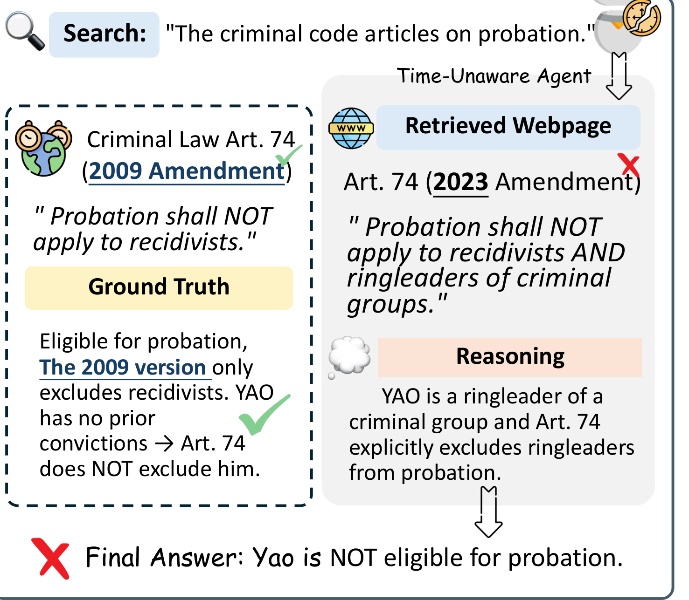
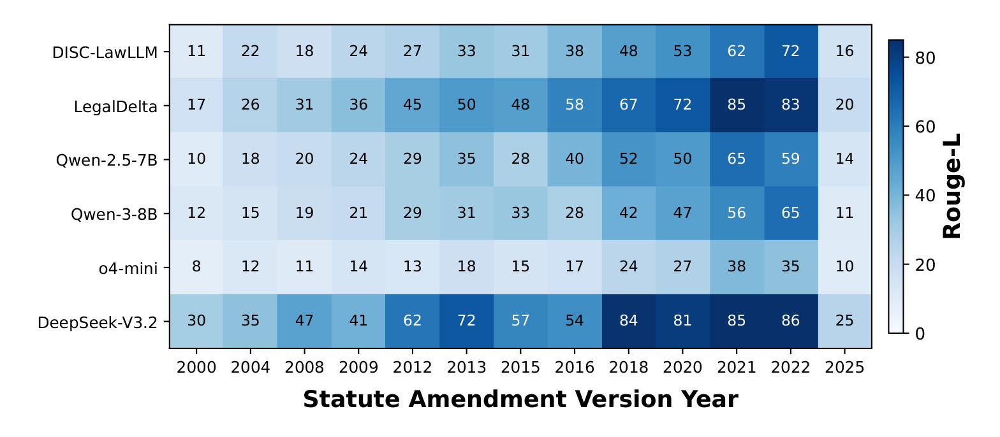
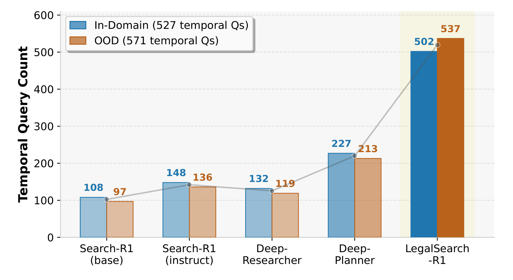
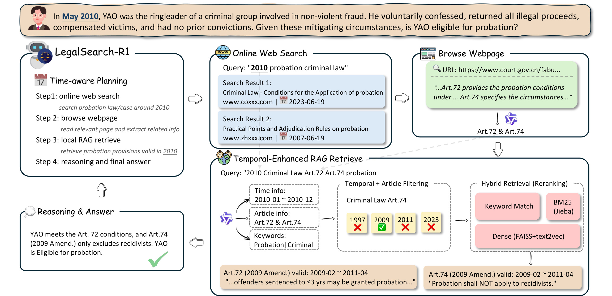
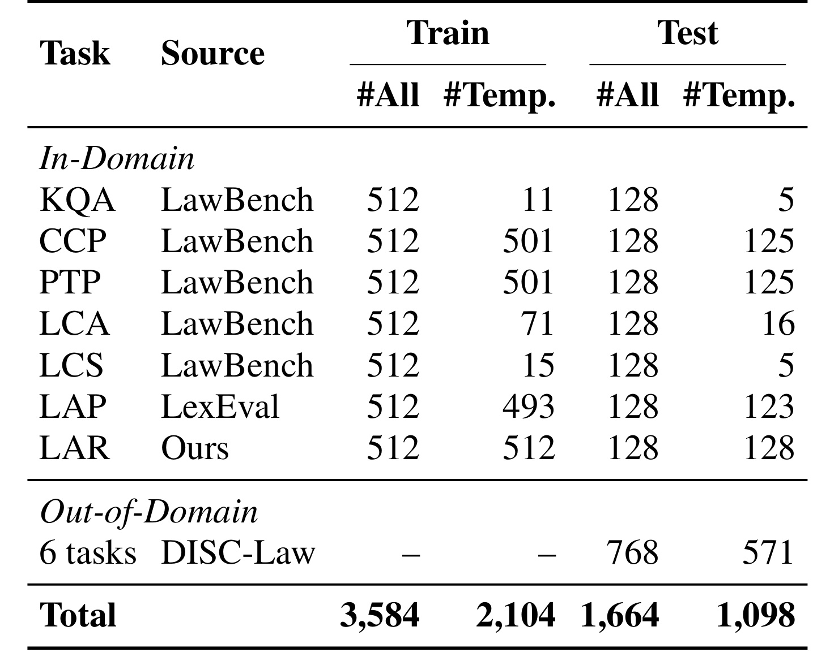
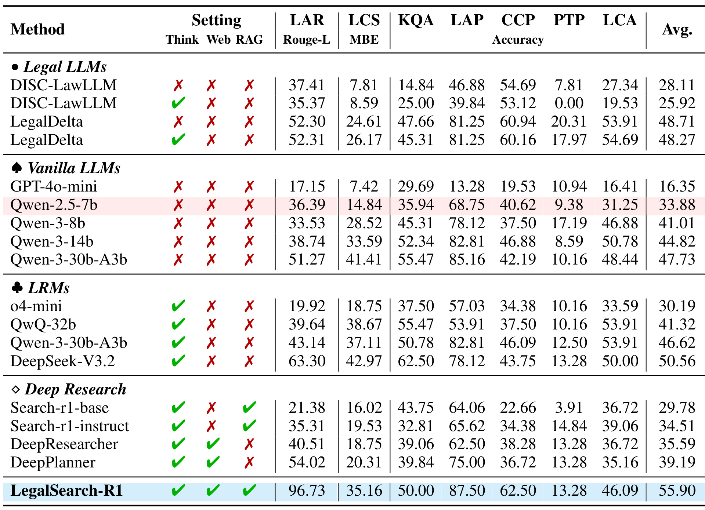
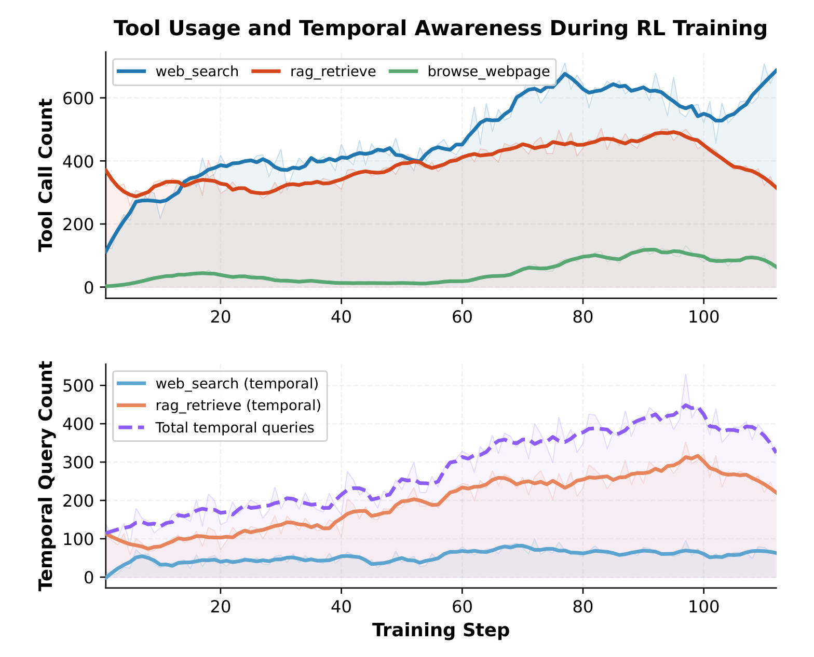
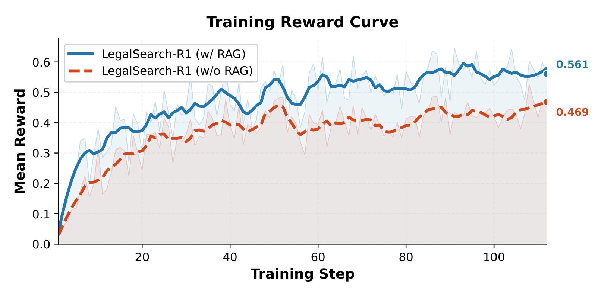
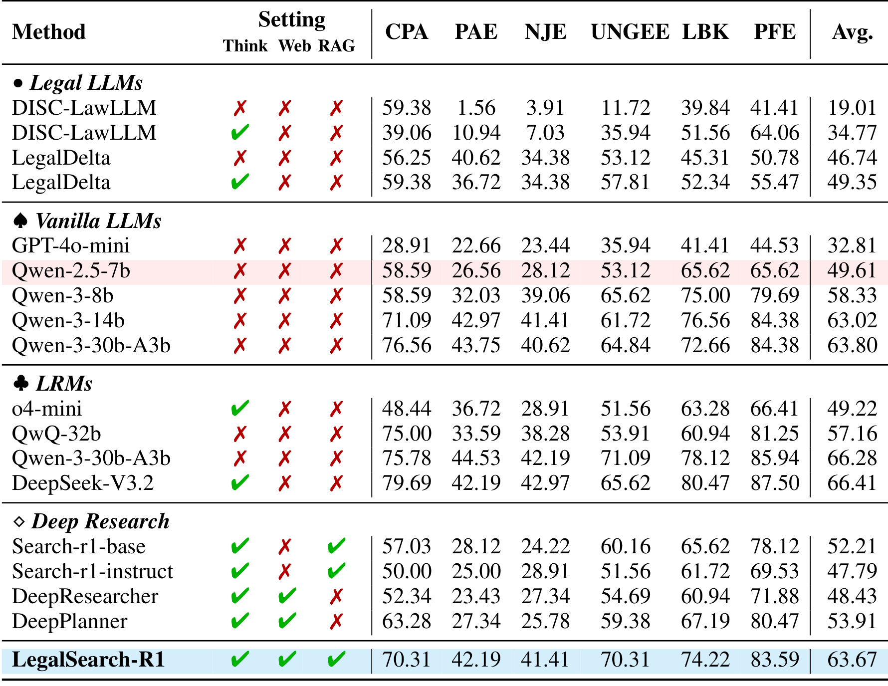

- 论文：Can LLMs Time Travel? Enhancing Temporal Consistency in Legal Agentic Search through Reinforcement Learning
- 方法名：LegalSearch-R1
- arXiv：2605.25920，版本 v1，页面标注日期为 2026-05-25
- 作者与机构：Wei Fan、Yining Zhou、Mufan Zhang、Yanbing Weng、Yiran Hu、Tianshi Zheng、Baixuan Xu、Chunyang Li、Jianhui Yang、Haoran Li、Yangqiu Song；一作和多数作者来自香港科技大学，合作机构包括清华大学法学院与滑铁卢大学 Cheriton School of Computer Science。
- 主类别：LLM / 法律检索 Agent；关键词：temporal consistency、legal agentic search、local statute RAG、online web search、GRPO、entropy-based advantage shaping、Chinese law benchmark。
- 原文入口：arXiv:2605.25920
这篇论文的核心问题很清楚：法律问答不是普通事实问答，答案不仅取决于“现在网上能搜到什么”，还取决于案件事实发生时哪一版法律正在生效。LegalSearch-R1 把这个问题落到一个可训练的 Agent 框架里，用本地带有效期的法条 RAG 负责精确条文，用在线搜索和网页浏览补充司法解释、案例分析和通用法律知识，再用强化学习逼 Agent 在规划阶段主动写出时间条件。
1. 背景和问题
法律检索 Agent 的诱人之处，是它看起来能同时解决大模型的知识截止和法律材料的权威性问题。闭卷法律 LLM 容易记错最新条文，RAG 可以把问题接到外部材料；普通搜索 Agent 可以多轮 search、browse、reason，看起来比一次性检索更接近律师查法条的过程。但本文指出，这条路径在法律场景里还少了一个硬约束：法律规则有版本，案件事实也有时间。一个刑事案件发生在 2010 年，就不能因为 2023 年的修正案在搜索结果里更靠前、更容易被模型记住，就直接把 2023 年文本套到 2010 年事实上。这个约束在法律原则上对应 lex retro non agit，也就是法律一般不得溯及既往；在工程上则对应“查询、检索、证据和推理必须对齐同一个时间上下文”。
论文用缓刑资格的例子把失败模式讲得很直观。2010 年，YAO 是非暴力诈骗犯罪集团的首要分子，但主动供述、退赃、赔偿被害人且无前科。问题是他是否适用缓刑。真正应当适用的是 2009 年修正后的刑法第 74 条，该版本只排除累犯，所以在该条上首要分子身份并不当然排除缓刑；如果模型误用了 2023 年修正后的条文，就会看到“累犯和犯罪集团首要分子不适用缓刑”，从而给出相反答案。这不是“模型没搜到法条”这么简单，而是搜到的法条版本和案件时间不一致。

Figure 1 的裁片保留了最关键的冲突：左侧 ground truth 是 2009 amendment，右侧 time-unaware agent 从网页里拿到 2023 amendment，最后把 YAO 判成“不适用缓刑”。这里的错误不是推理链条内部完全不合逻辑，而是证据入口已经错了。右侧 Agent 看到“ringleaders of criminal groups”后，把事实中的首要分子身份和新法排除条件匹配起来，形式上很像一次成功的法条适用；问题在于它没有先问“这个案子发生在 2010 年，2010 年有效的条文是什么”。这正是法律 Agent 与通用 Web QA 的差别：Web QA 常常默认最新信息更好，法律 QA 却经常要求回到过去某个有效期窗口。
作者进一步把这个问题拆成两个互相叠加的来源。第一是参数知识的时间偏差。法律 LLM 和通用 LLM 在训练语料中接触到的条文分布不均，靠近训练截止时间的版本更容易被记住；过早的版本和训练后才出现的版本都更容易退化。第二是搜索规划的时间缺失。许多 Agent 即使有搜索工具，也只会搜索“刑法第 74 条 缓刑”这类主题词，而不会自然写出“2010 年刑法第 74 条”或“2009 修正案有效期”这样的约束。两个问题叠在一起时，模型既倾向于相信自己或网页中较新的条文，又没有在行动层面把案件年份传给检索系统。

Figure 2 是作者用 Legal Article Recitation 任务观察到的参数知识偏差。横轴是法条修正版本年份，纵轴是 DISC-LawLLM、LegalDelta、Qwen 系列、o4-mini、DeepSeek-V3.2 等模型，单元格是 recite 指定年份法条文本时的 ROUGE-L。最显眼的形态是 2021-2022 附近颜色更深，说明模型对靠近训练截止或高频流通版本的条文更熟；2000、2004、2008 和 2025 的格子明显更浅，说明早期版本和 post-cutoff 版本都更容易丢失。这张图支撑了本文第一个判断：只靠参数知识无法保证“回到案件发生时”的法条版本，尤其在需要逐字复述法条的 LAR 任务上，时间版本就是任务本身的一部分。

Figure 3 则把问题从“模型知道什么”推进到“Agent 会不会主动查什么”。Search-R1 base、Search-R1 instruct、DeepResearcher、DeepPlanner 在 in-domain 和 OOD temporal questions 上生成带时间条件的查询次数都很低，最高的 DeepPlanner 也只有 227 和 213；LegalSearch-R1 分别达到 502 和 537。这个差距说明同样是深度搜索 Agent，搜索行为不一定天然具备时间意识。论文的目标因此不是再做一个普通法律 RAG，而是训练一个会在 plan 和 tool call 阶段显式携带时间上下文的法律搜索 Agent。
对推荐系统和大模型方向来说，这篇论文的价值不只在“法律应用”。它把一个长期存在但经常被模糊处理的问题形式化了：外部检索不是越新越好，检索对象必须和任务上下文的时间、版本、权限、地域、实体状态对齐。推荐系统里的商品价格、权益规则、用户状态、合约条款也有类似版本窗口；RAG 和 Agent 系统如果只追求 recall 或网页新鲜度，就可能把不可用的当前规则套到历史请求或受限用户上。LegalSearch-R1 的法律场景更高风险，因此把这个问题暴露得更尖锐。
2. 方法
2.1 Temporally-contextualized legal query 与 ReAct 轨迹形式化
论文先把任务写成一个带时间上下文的法律 Agentic Search 问题。输入不是单独的问题 q，而是 temporally-contextualized legal query，也就是 (q | t_q)。其中 q 是法律问题，t_q 是法律事实对应的时间上下文，通常是案件发生年份或题目给出的年份。这个 t_q 不只是提示词里的背景信息，而决定哪一版法条具有可适用性。比如同样问刑法第 74 条下能否缓刑，t_q=2009 和 t_q=2023 可能给出相反结论；如果系统没有把 t_q 传递到检索和推理，每一步看似合理的证据都会在法律上失效。
作者沿用 ReAct 风格，把 Agent 的多轮交互轨迹定义为：
符号解释：τ 是一次完整法律检索和推理轨迹；s_t 是第 t 步的状态；e_t 是模型生成的 reasoning segment，也就是当前思考；a_t 是动作，可以是高层 plan、工具调用或最终 answer；T 是交互结束步数；R 是终止奖励，用来评价最后答案是否满足对应法律任务。这个公式的关键不是把 ReAct 重新命名，而是把 reward 放在轨迹末尾，允许后续 RL 直接优化“哪些 plan 和 tool call 最终带来正确法律答案”。
状态 s_t 又被写成：
符号解释：p 是系统 prompt；q 是法律问题；t_q 是题目中的时间上下文；e_i 是截至当前的推理片段；a_i 是截至当前的动作 token；o_i 是此前工具返回的 observation。注意 o_i 的上界是 t-1，因为当前步生成动作前只能看到之前工具的结果。这个状态定义把时间上下文放到和问题、prompt 同等的位置，后续每次生成 plan 或 tool call 都能条件化在 t_q 上。若 t_q 只在用户原问题里出现、后续工具调用没有携带，系统仍会退回普通搜索；因此论文的方法核心是让 t_q 从状态进入查询分析、RAG 过滤和 RL 信号。
在这个形式化里，Agent 每一步会输出 Think、Plan、Tool Call 或 Answer。Think 包在 think 标记中，是当前状态下的法律分析；Plan 是高层研究策略，第一轮必须产生，用来说明要查哪些法条、解释、案例或原则；Tool Call 调用 web_search、rag_retrieve 或 browse_webpage；Answer 是最终终止动作。和普通 QA pipeline 相比，这里把“计划是否考虑时间”放到了可观察的 action token 里，后面 Figure 5 的 temporal query count 正是从这些工具调用里统计出来的。
这个任务形式化解决了一个容易被忽略的建模问题：时间一致性不是最终答案后处理能修好的东西。如果 Agent 已经用错误版本法条构造了证据链，最后再要求模型“注意时间”往往太晚。更稳的做法是让每个状态都携带 t_q，让 plan 决定是否要查时间，让 RAG 在候选集合阶段过滤版本，让 reward 在答案层面惩罚错版本。LegalSearch-R1 的后续模块都围绕这个状态定义展开。
2.2 Agentic legal toolset：在线搜索、网页浏览和本地时间增强 RAG 的分工
LegalSearch-R1 配置了三个工具：web_search、browse_webpage 和 rag_retrieve。它们不是三个可互换的信息源，而是承担不同法律证据角色。web_search 面向开放网页，适合查司法解释解读、案例分析、制度背景、法律评论和本地法条库没有覆盖的材料；browse_webpage 接在搜索结果之后，用一个法律阅读 Agent 抽取网页内容，特别强调保留原始法条文本、司法文书、有效日期和修订历史；rag_retrieve 面向本地整理过的中国成文法语料，负责精确到 article-level 的条文检索，并且每个 chunk 都带有效期窗口。

Figure 4 是整篇论文的方法中枢。左侧 time-aware planning 先把 2010 年缓刑问题拆成四步：在线搜索 2010 左右缓刑法律和案例，浏览相关页面，调用本地 RAG 检索 2010 年有效的第 72 条和第 74 条，最后推理作答。中间在线搜索展示了一个很现实的问题：搜索结果有 2023 年页面，也有 2007 年页面，网页时间并不等于法条有效时间。右侧 browse_webpage 能从网页里抽取 Art.72 与 Art.74 的信息，但仍不足以保证版本精确。下方 Temporal-Enhanced RAG Retrieve 才是版本控制的关键：先从 query 中抽出 time info、article info 和 keywords，再用 “Criminal Law Art.74” 在 1997、2009、2011、2023 四个版本中做 temporal + article filtering，最后只让 2009 版本通过，之后才走 Keyword Match、Dense、BM25 的 hybrid reranking。图中最后返回的 Art.72 和 Art.74 都明确标注 valid: 2009-02 到 2011-04，这让最终答案能建立在 2010 年真实有效的条文上。
这套工具分工的一个重要设计是：web search 不再被要求承担全部精确性。法律网页经常混合条文、解读、案例摘要和修法说明，搜索结果可能把最新版本排在最前，也可能截断原文。若把网页搜索当成唯一知识源，Agent 需要在噪声、缺失和版本混合中自己判断。LegalSearch-R1 把“精确条文”收束到本地 RAG 里，把“广义法律背景”交给在线搜索。这样做牺牲了一部分开放覆盖，但换来法条版本和 article-level matching 的可控性。
Temporal-Enhanced Legal Statute RAG 的流程有四步。第一步是 LLM query analyzer，把自然语言问题拆成结构化字段：time_info、chapter_info 和 keywords。例如“2010 年刑法第 74 条缓刑”会生成 2010-01-01 到 2010-12-31 的时间范围、第七十四条这类条文引用，以及缓刑、刑法等关键词。第二步是 temporal filtering，只保留有效期窗口 (t_from, t_to) 与 time_info 相交的 chunk。第三步是三路检索：关键词精确匹配、FAISS 加中文法律 embedding 的 dense retrieval、BM25 sparse retrieval。第四步是 RRF 聚合：
符号解释：d 是候选法条文档；c 表示检索通道，k 是 keyword exact matching，d 是 dense vector retrieval，s 是 BM25 sparse retrieval；w_c 是通道权重，论文设定 w_k=3.0、w_d=2.0、w_s=1.0；K 是平滑常数，论文设为 60；r_c(d) 是文档 d 在通道 c 中的排名。这个公式的直觉是，把三个通道的“排名好坏”转成可相加的分数，而不是直接比较不同检索器的原始相似度。关键词通道权重最高，符合中文法律检索里的条文号、罪名、法名强匹配特性；dense 和 BM25 分别补语义相似和稀疏词项匹配。
RRF 前的 temporal filtering 比 RRF 本身更关键。若先把所有版本一起召回再重排，最新版本因为网页和语料频率更高，仍可能在稠密或 BM25 分数上占优；先按有效期过滤，则后续检索只在法律上可适用的版本里排序。这个顺序体现了法律约束和信息检索分数的优先级：有效性是硬门槛，相关性是门槛内排序。
2.3 Temporally-indexed legal tasks 与 LAR 的构造逻辑
方法不只包括模型架构，还包括训练和评测数据如何让时间一致性成为可学习目标。论文从 LawBench、LexEval、DISC-LawEval 和自建标注中构造 temporally-indexed benchmark，覆盖 13 个法律任务，其中 7 个 in-domain 任务有训练和测试切分，6 个 out-of-domain 任务只用于测试。作者特意强化了问题中的时间上下文，因为如果样本大多不含年份，Agent 即使学会工具调用，也很难从 reward 中区分“查当前法条”和“查历史有效法条”的差别。
七个 in-domain 任务分别是 KQA、CCP、PTP、LCA、LCS、LAP 和 LAR。KQA 是法律知识问答，多为选择题；CCP 是罪名预测；PTP 是刑期预测；LCA 是法律案例分析；LCS 是法律咨询，答案和法律依据用 LLM judge；LAP 是法条预测；LAR 是本文新构造的 Legal Article Recitation，要求在给定时间上下文下逐字复述指定法条。LAR 的重要性很高，因为它把 temporal consistency 从“答题是否对”变成“版本文本是否精确”。如果模型用错修正年份，ROUGE-L 会直接下降，而不是被模糊的自然语言解释掩盖。
LAR 的构造由法律学生标注完成，覆盖刑法、刑事诉讼法、民事诉讼法在 2000 到 2025 年间 13 个 amendment versions。标注标准包括两类：修订前后字符数量差异超过 20%，或修订引入了会改变法律意义和适用范围的语义变化。这个标准很实用，因为不是所有修法都同等影响推理；如果只是措辞微调，LAR 对 temporal consistency 的区分度会弱。作者选择那些文本和语义都明显变化的条文，等于把“必须查对版本”的样本集中到训练和评测中。
OOD 任务来自 DISC-LawEval 的六类专业考试：CPA、PAE、NJE、UNGEE、LBK 和 PFE。作者把每道题的发布年份嵌入 prompt，让这些题也带时间背景。这一步不是简单扩展数据规模，而是检验 LegalSearch-R1 是否只记住了 in-domain 的法条版本，还是学会了一种可迁移的时间检索策略。因为 professional examinations 覆盖税法、专利、司法考试、研究生入学等多领域，和训练中的刑法、民法、诉讼法任务分布不同。
2.4 Agentic RL training：token-level GRPO 为什么作用在规划和工具调用上
LegalSearch-R1 的训练骨架是 GRPO，并采用 token-level 版本来处理长法律搜索轨迹。法律 Agent 的输出很长，既包括思考、计划、工具调用参数，也包括最终答案；如果只给整条 trajectory 一个粗粒度 advantage，模型很难知道到底是“查询中写了 2010 年”带来了正确结果，还是后续推理中的某句话带来了收益。token-level GRPO 保留 individual token contributions，能让 planning tokens 和 tool-call tokens 接收更细的优化信号。
论文的 GRPO 目标写成：
符号解释：θ 是当前策略参数；i 表示同一个 query 下的第 i 个 rollout；t 表示 token 位置；r_{i,t} 是当前策略相对旧策略在该 token 上的概率比；A_{i,t} 是该 token 对应的优势估计；clip 用 1-ε 到 1+ε 限制策略更新幅度；βD_KL 是 KL 正则项，论文表格中 KL loss coefficient 设为 0，但公式保留一般形式。这个目标和 PPO/GRPO 一脉相承，关键点是它按 agent-generated tokens 归一化，并排除 tool responses，避免工具返回的长文本稀释模型自己生成 token 的训练信号。
概率比和组内优势的定义为：
符号解释：π_θ 是当前策略，π_old 是 rollout 时使用的旧策略；a_{i,t} 是第 i 条 rollout 在第 t 个位置的动作 token；s 是问题对应状态；a_{i,<t} 是之前已经生成的动作 token；R_i 是第 i 条 rollout 的最终奖励；mean(R) 和 std(R) 是同组 G 条 rollout 奖励的均值和标准差。GRPO 不需要单独训练 value model，而是用同组样本的相对表现作为 baseline。对本文来说，同一个法律问题可能有些 rollout 会把年份写进 rag_retrieve，有些不会，组内相对奖励就能把这些行为区分开。
训练中更有针对性的是 entropy-based advantage shaping。作者认为，是否在 planning 阶段写出时间约束是一个高熵决策：早期模型不知道“2010”是否必须进入查询，可能在多个查询写法之间摇摆，而这个决策会决定后面能否检索到正确版本。为了加速学会 temporal query formulation，他们加了一个 detached shaping term：
符号解释：H_{i,t} 是 token 级 entropy，detach 表示该项不反向改变 entropy 本身；α 是 shaping coefficient，论文设为 0.1；κ 是 clipping factor，论文设为 2，用来防止 shaping 把负优势直接翻成正优势；A_{i,t}^{EAS} 是加形后的优势。直觉上，如果某个 planning token 处在高不确定状态，并且整条轨迹最终表现好，那么它的正向学习信号会被放大；如果轨迹表现差，κ 的限制避免模型因为高 entropy 而奖励错误探索。对时间查询来说，这相当于鼓励模型更快发现“把年份写进查询”这种高影响 token。
这个 shaping 项也解释了为什么 LegalSearch-R1 不是只靠 prompt 工程。系统 prompt 可以要求“注意时间”，但模型在长期输出里是否真的把时间写进 plan 和 tool call，需要 reward 反复强化。EAS 把这个强化集中到规划阶段的高熵位置，避免训练很多步后才通过最终答案的稀疏奖励慢慢传播回来。
2.5 Reward function：格式、任务正确性与法律答案类型的统一
LegalSearch-R1 面对的任务类型很杂：有选择题、罪名预测、刑期预测、法条复述、法律咨询和案例分析。论文没有为每个任务设计完全不同的 Agent，而是用统一的轨迹格式约束加任务特定评分函数。奖励 R 写成：
符号解释：FORMAT(τ) 检查轨迹格式是否合规，包括 XML-like tags 是否平衡、第一轮是否包含 plan 等；a 是模型预测答案；a^* 是 ground truth；task 是具体任务类型；SCORE 是任务相关正确性。这个奖励先把格式合规作为硬门槛。法律 Agent 必须按 think、plan、tool_call、answer 的协议输出，否则即使答案碰巧正确，也不能被训练成可控工具使用者。
任务评分函数进一步写成：
符号解释：LAR 使用字符级 ROUGE-L，并在训练中设定 0.95 的严格阈值；CCP 使用 unordered matching，并做 suffix normalization，因为罪名预测可能有顺序差异；LCS 用 LLM judge 同时看答案正确性和法律依据质量；其他选择题或分类任务直接比较答案。所有训练分数都是二值奖励。这个设计看似粗糙，但适合 GRPO：模型需要明确知道当前 rollout 是否达到了法律任务标准，而不是拿到模糊的连续偏好分。
尤其值得注意的是 LAR 的 0.95 阈值。法条复述不是大意相似就行，少了一个“不”或错用了新旧条文都会改变法律效果。把 LAR 奖励二值化到 0.95 以上，迫使 rag_retrieve 返回完整、正确版本文本，也迫使 answer 保留法条原文。相比之下，普通法律 QA 如果只用 LLM judge，可能会把“解释得像那么回事”的错版本答案判得较高。LAR 是本文能严肃衡量 temporal consistency 的关键任务。
2.6 训练实现、辅助模型与推理时的工具协议
实现上，LegalSearch-R1 使用 Qwen2.5-7B-Instruct 作为 backbone。browse_webpage 和 rag_retrieve 内部的辅助 LLM 使用 Qwen3-30B-A3B，分别负责网页内容抽取和结构化 query analysis。强化学习采用 VERL 的异步多轮 rollout，使用 FSDP 参数和优化器 offloading，以及 Ulysses sequence parallelism。训练在单节点 8 张 H100 上进行，global batch size 64，每个 query 生成 8 个 concurrent rollouts，训练 112 steps，学习率 1e-6，最大 prompt 长度 4096，最大 response 长度 28671，最大上下文 32767，最多 15 个 assistant turns。评测时 temperature 设为 0，每个 prompt 只跑一个 deterministic rollout。
系统 prompt 的作用是把工具协议固定下来。第一轮必须先输出 thinking 和 step-by-step research plan；每轮都必须以 thinking 开头；最终轮输出 thinking 和 answer。工具路由规则要求：涉及具体法律条文、法名、Article X 的问题优先用 rag_retrieve；涉及法律理论、制度发展、案例分析、司法实践的问题用 web_search；browse_webpage 只能浏览前面 search 返回的 URL。这样的 prompt 并不能单独保证时间一致性，但它给 RL 提供了一个可执行空间：模型可以在 plan 中决定先查何种资料，在 tool call 参数里写入年份和条文号，在 answer 中引用工具证据。
辅助工具 prompt 也有明显法律化处理。browse_webpage 的阅读 Agent 要求遇到原始中文法条时逐字保留，不得意译；遇到司法文书、处罚决定、案例事实和法律推理要尽量完整抽取；遇到 effective dates、version identifiers、revision history 必须保留。rag_retrieve 的 query analyzer 则要求输出标准 JSON，时间信息要转成 YYYY-MM-DD 范围，Article 或 Chapter 要转换成中文数字，keywords 要抽取语义完整的法律概念。也就是说，LegalSearch-R1 的“RAG”并不是把问题直接丢给向量库，而是在检索前做法律字段解析和时间规范化。
推理阶段，这套系统的理想路径是：模型先在 plan 中识别案件年份和需要适用的法条；若需要广义背景，先 web_search 并 browse_webpage；若需要精确条文，调用 rag_retrieve 并把年份、法名、条文号、核心关键词写进 query；RAG 返回带 validity window 的条文；模型在 reasoning 中比较案件时间与有效期，再给出答案。训练时的 reward 不直接监督每个工具调用是否写对年份，但只要错版本导致最终答案错，组内优势和 EAS 就会逐渐把“时间感知规划”变成高收益行为。
方法的边界也由这些设计显露出来。首先，本地 RAG 语料当前只覆盖 16 部主要中国成文法和历史修正版本，不覆盖司法判例和地方规范；因此它适合民法法系里以法条为核心的任务，对普通法中 precedent 的版本管理还不充分。其次，browse_webpage 和 query analyzer 依赖 Qwen3-30B-A3B，严格说不是纯 7B 系统；论文结果里的“7B agent”指主策略模型参数规模，不代表整个工具系统都只有 7B。最后，时间上下文必须能从题目或 query 中抽出；如果用户问题没有给案件时间，Agent 仍需要先追问或从事实中推断，否则 temporal filtering 没有明确锚点。
3. 实验结果
3.1 Benchmark 规模和时间样本覆盖
实验先看数据规模。训练集包含 7 个 in-domain 任务，每个任务 512 条，共 3584 条；in-domain 测试每个任务 128 条，共 896 条。OOD 测试是 DISC-Law 的 6 个专业考试任务，共 768 条。更重要的是 temporal question 的数量：训练集中有 2104 条带显式时间上下文的问题，测试集中 in-domain 与 OOD 合计有 1098 条 temporal questions。这说明论文不是在少量示例上演示“注意年份”，而是把时间上下文系统性放进训练和评测。

Table 1 的读法要注意两列 #Temp.。KQA 和 LCS 的 temporal 样本很少，分别只有训练 11/15、测试 5/5；而 CCP、PTP、LAP、LAR 的 temporal 样本非常多，尤其 LAR 训练和测试全是 temporal。这个分布符合任务性质：法条复述、罪名预测、刑期预测和法条预测更依赖具体时间版本；普通知识问答和咨询不一定每题都有年份。OOD 6 tasks 的测试集中 768 条里有 571 条 temporal，比例 74%，用于检验模型在专业考试题上的泛化时间感知。
3.2 In-domain 主结果：LAR 是最大证据锚点
主结果表覆盖四类基线：法律 LLM、普通 LLM、Large Reasoning Models、Deep Research agents。所有 deep research baselines 使用同一个 Qwen2.5-7B-Instruct backbone，并在论文构造的法律数据上训练，比较是相对公平的。LegalSearch-R1 在 7 个 in-domain 任务上平均 55.90，超过 DeepPlanner 的 39.19，也超过 DeepSeek-V3.2 的 50.56。平均分提升已经明显，但最关键的还是 LAR。

Table 2 中 LegalSearch-R1 的 LAR ROUGE-L 是 96.73，而 DeepSeek-V3.2 是 63.30，DeepPlanner 是 54.02，Search-R1 instruct 是 35.31。这个差距说明本地时间增强法条 RAG 对“逐字复述正确版本法条”非常有效。其他任务上结果更复杂：LAP 87.50 和 CCP 62.50 都很强，说明法条预测和罪名预测受益明显；LCS 35.16 低于 DeepSeek-V3.2 的 42.97 和 Qwen-3-30B-A3B 的 41.41，说明法律咨询这种需要开放解释和表达质量的任务，LegalSearch-R1 的小 backbone 与工具组合并不一定全面领先；PTP 13.28 也只是和 DeepSeek-V3.2、DeepPlanner 持平。这些细节很重要，因为论文的优势不是“所有法律任务都碾压”，而是在需要精确时间版本和条文定位的任务上极强。
从平均分看，LegalSearch-R1 的 55.90 比最强 deep research baseline DeepPlanner 高 16.71 分，相对提升约 42.7%；比 LegalDelta 无思考版本 48.71 高 7.19 分；比 Qwen-3-30B-A3B 无思考版本 47.73 高 8.17 分。若排除 LAR，作者仍称相对 DeepPlanner 提升 33.7%，但从表中可以看到这部分优势更多来自 LAP、CCP 和 LCS，而不是 PTP、LCA。实验结论因此应当聚焦：时间增强 RAG 和 RL 训练让 Agent 更会查对条文版本，尤其适合法条复述、法条预测、罪名推断这类依赖规范文本的任务。
3.3 时间一致性行为：RL 是否真的学会写时间查询
论文没有只报最终分数，还统计了训练过程中的工具使用和 temporal query。Figure 5 上半部分是 web_search、rag_retrieve、browse_webpage 的调用数量，web_search 调用总体上升，rag_retrieve 中后期也保持高位，browse_webpage 调用较少但在训练后段出现增长。下半部分是带显式时间约束的查询数量，total temporal queries 从约 100 上升到超过 250，rag_retrieve temporal query 的增长最明显。

Figure 5 支撑了一个关键因果链：LegalSearch-R1 的时间一致性不是评测时靠固定模板问出来的，而是在 RL 训练中逐渐形成的行为。下图紫色虚线代表总 temporal queries，它随训练 step 上升，说明模型越来越常把年份、修正时间或有效期放进工具查询。橙色 rag_retrieve temporal 曲线比蓝色 web_search temporal 更高，说明模型学到的不只是“网页搜索时加年份”，而是更常在本地法条检索里携带时间约束。这和方法设计吻合：精确法条版本由 rag_retrieve 负责，时间条件在那里最有价值。
这项行为分析也能解释 Figure 3 中 LegalSearch-R1 对其他 Agent 的优势。Search-R1、DeepResearcher、DeepPlanner 都有搜索或规划能力，但它们没有被奖励专门训练“法律时间约束查询”；因此在 temporal questions 上，查询次数停留在较低水平。LegalSearch-R1 通过 temporally-indexed data 和 EAS 把时间约束变成有回报的动作，最终在 in-domain 生成 502 次、OOD 生成 537 次显式时间查询。这里的“query count”不是最终答案指标，但它是连接方法和结果的中间证据。
3.4 本地时间增强 RAG 的消融
为了隔离 rag_retrieve 的贡献，作者训练了一个没有本地 RAG 的变体，只保留 web_search 和 browse_webpage，其余设置不变。Figure 6 显示完整 LegalSearch-R1 的训练 reward 曲线始终高于无 RAG 版本，最终 0.561 对 0.469。这个差距不是特别夸张，但稳定存在，并且在 LAR 上会被放大：完整模型 LAR 96.73，而所有没有结构化法条检索的基线都低于 63.30。

Figure 6 的直觉是，web search 能发现“某个法律问题的解释”，但很难稳定返回“某年某法某条的完整文本”。法律网页经常把旧法、新法、案例解读混在一起，snippet 还会截断；browse_webpage 能抽取更多文本，但没有本地语料那种明确的 t_from、t_to 版本边界。rag_retrieve 的作用就是把可适用性变成检索前硬过滤，再用 RRF 排序候选。奖励曲线证明这不是只在个别样例上有用，而是在整个训练过程中提升了 agent 的平均成功概率。
3.5 OOD 泛化：专业考试任务上的优势和边界
OOD 结果放在附录 Table 4，但正文明确引用。LegalSearch-R1 在六个专业考试任务上平均 63.67，超过 deep research baselines 中最强的 DeepPlanner 53.91，也超过法律 LLM 中最强的 LegalDelta thinking 49.35；但略低于 Qwen-3-30B-A3B thinking 66.28 和 DeepSeek-V3.2 66.41，与 Qwen-3-30B-A3B 无思考版本 63.80 接近。这个结果说明 LegalSearch-R1 的泛化有效，但并非在 OOD 上全面超过更大推理模型。

Table 4 的细项显示，LegalSearch-R1 在 CPA 上 70.31，低于 DeepSeek-V3.2 的 79.69 和 Qwen-3-30B-A3B thinking 的 75.78；在 PAE 上 42.19，接近 Qwen-3-30B-A3B thinking 的 44.53，明显好于 DeepPlanner 27.34；在 UNGEE 上 70.31，接近 Qwen-3-30B-A3B thinking 的 71.09，高于 DeepSeek-V3.2 的 65.62；在 PFE 上 83.59，低于 DeepSeek-V3.2 的 87.50 和 Qwen-3-30B-A3B thinking 的 85.94。结论应该谨慎表述为：LegalSearch-R1 用 7B backbone 和工具体系接近或超过部分大模型，在 deep research agent 组里最强，但并未在所有 OOD 任务上压过更大 LRMs。
这个边界反而让论文更可信。专业考试题不一定都需要旧版本法条，很多题考的是概念、计算或制度常识；大模型的泛化知识和推理能力在这些题上仍有价值。LegalSearch-R1 的优势主要来自时间版本检索、法条精确匹配和工具证据链；当任务更像普通考试常识或多步算术时，7B backbone 可能限制最终表现。因此工程上不应把 LegalSearch-R1 理解为替代所有法律大模型，而应理解为一个时间敏感、法条版本敏感问题的 Agent 训练范式。
3.6 案例、限制和实验可信度
论文的 case study 是继承纠纷：2001、2002、2004 年存在多份遗嘱，旧继承法下公证遗嘱有优先效力，而 2021 年民法典后规则改变，多个遗嘱冲突时最后遗嘱优先。LegalSearch-R1 先用 web_search 发现规则在 2021 年发生变化，再用 rag_retrieve 检索 2001-2004 年有效的旧继承法第 20 条，最终选择公证遗嘱。这个案例把框架逻辑串起来：搜索找制度背景，RAG 找精确旧法，时间过滤避免民法典新规污染答案。
实验可信度上，本文强在三点。第一，任务覆盖从 LawBench、LexEval、DISC-LawEval 到自建 LAR，既有训练分布内，也有专业考试 OOD。第二，比较对象包括法律专用模型、通用模型、LRMs 和 deep research agents，并且 deep research baselines 使用相同 backbone 和法律训练数据。第三，除了最终分数，还给了 Figure 3、Figure 5、Figure 6 这些行为和消融证据，说明提升机制与方法设计有对应关系。
但也有明显限制。论文只在中国法律系统和中文法律任务上做实验，RAG 语料主要是成文法条，不含司法判例或判例法体系下的 precedent graph。LCS 和 PTP 等任务没有全面领先，说明工具检索不能替代更强的法律推理或专业量刑建模。辅助 LLM 使用 Qwen3-30B-A3B，也意味着复现 LegalSearch-R1 不能只准备一个 7B 策略模型。最后，temporal consistency 的评估高度依赖题目中有明确年份；真实用户咨询常常缺少案件发生时间，系统还需要可靠的澄清问题或时间抽取策略。
4. 总结
4.1 我的判断
LegalSearch-R1 的贡献在于把“法律检索必须回到案件时间”从原则性提醒变成可训练、可评测、可消融的 Agent 行为。它没有把问题简化成“给 RAG 加时间字段”，而是同时处理了数据、工具和 RL 三层：数据层有 temporally-indexed benchmark 和 LAR；工具层有本地法条有效期过滤与在线搜索互补；训练层用 GRPO 和 EAS 强化规划阶段的 temporal query formulation。最强证据是 LAR 上 96.73 的 ROUGE-L 和 Figure 5 的 temporal query 增长，这两者分别证明“查到了正确版本文本”和“模型学会主动带时间查”。
4.2 工程启发与复现建议
如果要复现或迁移这篇工作，我会优先做三件事。第一，先整理版本化语料，而不是先训练 Agent；每个法规 chunk 必须有法名、条文号、有效起止日期、修订来源和原文，否则 temporal filtering 只是口号。第二，训练数据里要有足够多“同一条文不同年份答案不同”的 hard cases，LAR 这种复述任务很适合作为监督信号，因为错版本很难靠语言润色掩盖。第三，日志里必须保留 plan、tool call query、RAG 返回版本和最终引用，方便检查模型到底是主动用了时间，还是偶然搜到了正确页面。
4.3 局限与后续跟进
这篇论文的局限至少有四点。第一，法律体系局限在中文成文法，普通法场景中 precedent 的时间效力、判例层级和地区管辖更复杂，不能直接套用。第二，语料只覆盖主要 statutes，不覆盖司法解释、指导案例、地方规范和裁判文书版本，实际法律咨询中证据链可能不完整。第三，LCS、PTP 等任务表现没有全面领先，说明 Agentic Search 对开放法律咨询和量刑预测仍需要更强推理或专门模型。第四，系统依赖辅助大模型做网页抽取和 query analysis，端到端成本、延迟与可审计性还需要进一步报告。
后续我会关注三条线。第一，看作者是否开源完整 temporally-indexed statute corpus、LAR 标注和训练脚本，因为这决定论文能否被独立复现。第二，看能否把 temporal filtering 扩展到司法解释、案例和行政法规，并处理多个法律事实跨时间发生的复杂案件。第三，看这套训练方式能否迁移到推荐、金融、医疗等同样有版本规则的 Agent 检索任务：例如权益规则、价格政策、药品适应症和保险条款都需要“按当时有效版本回答”，LegalSearch-R1 提供了一个值得借鉴的训练模板，但需要重新定义各领域的版本化语料和 reward。